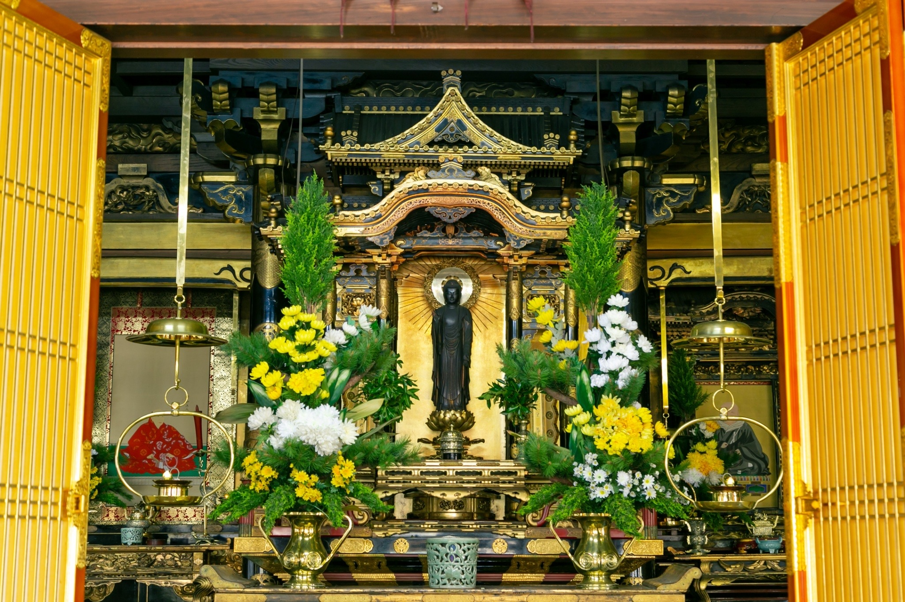
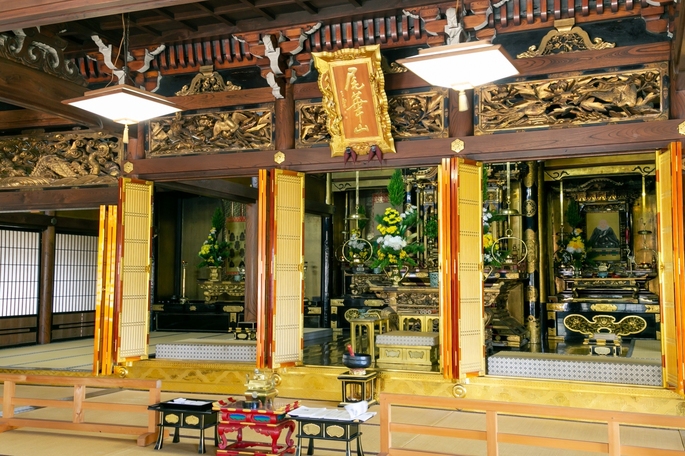
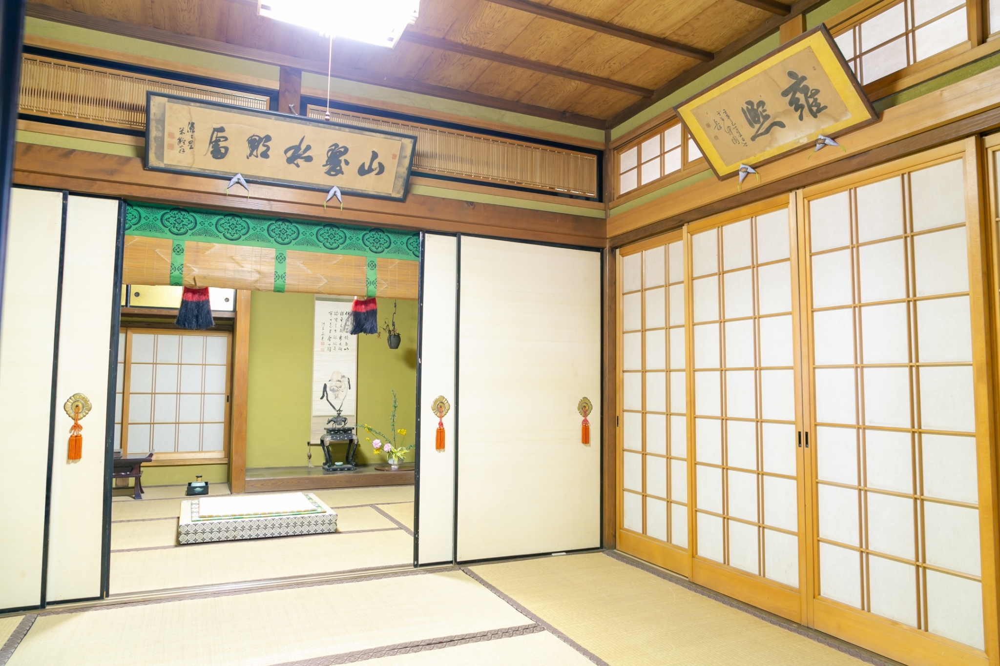
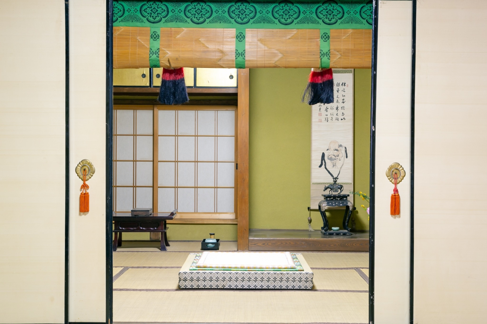
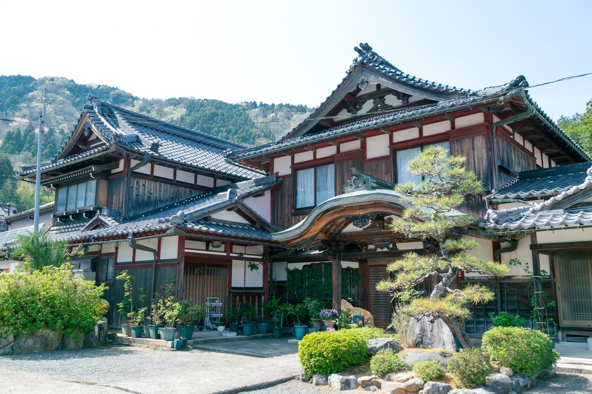
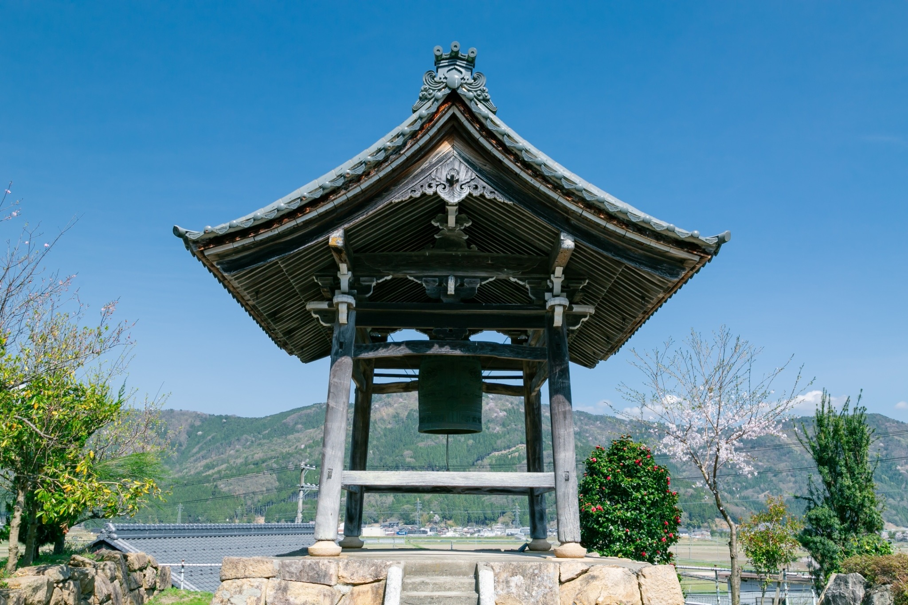
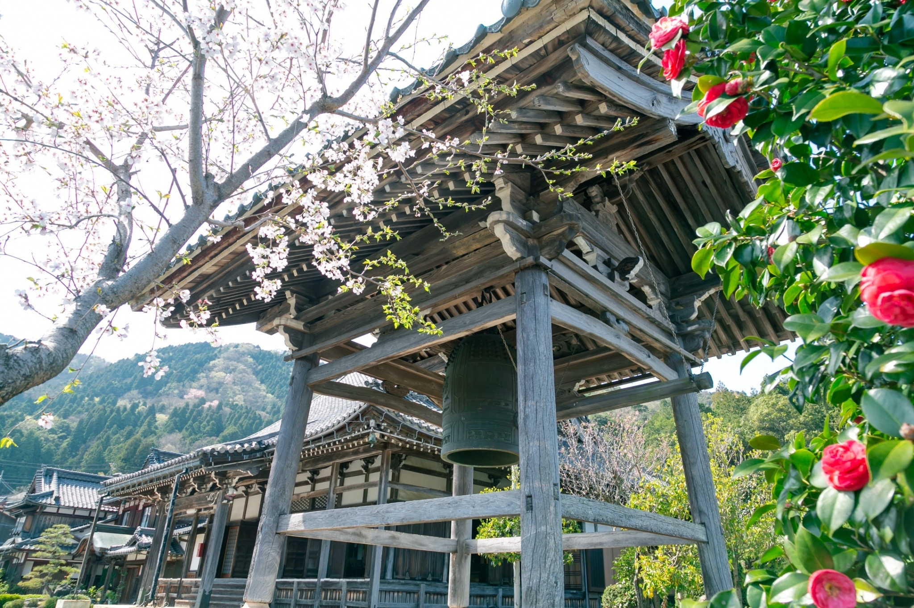
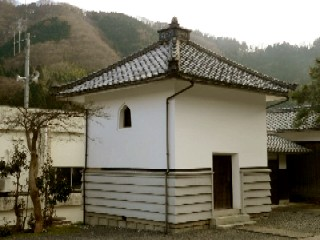

境内紹介
蓮通寺の境内をご案内いたします。歴史ある建造物や、静謐な空間をご覧ください。
本堂


本堂は蓮通寺の中心となる建物で、ご本尊である阿弥陀如来をお祀りしております。元文四年（１７３９年）に建立され、以来、当寺の信仰の中心として大切に守られてきました。静かで厳かな雰囲気の中、日々の勤行や様々な法要が執り行われます。
書院


書院は、法事や会議、来客の応対などに使用される空間です。落ち着いた和の設えで、参拝の方々がゆっくりと過ごせるよう配慮されています。季節の移ろいを感じられる庭園に面しており、心静かに過ごすことができます。
庫裏・玄関

庫裏（くり）は、寺の台所や住職の生活の場であり、玄関は参拝者の皆様をお迎えする場所です。蓮通寺へお越しの際は、こちらの玄関からお入りください。温かいおもてなしを心がけております。
鐘楼


鐘楼（しょうろう）は、梵鐘（ぼんしょう）が吊るされている建物です。その鐘の音は、日々の勤行の始まりや、心を落ち着かせる合図として、地域の方々に親しまれてきました。古くから境内の歴史を見守り続けています。
寳蔵

寳蔵（ほうぞう）は、蓮通寺に代々伝わる貴重な法宝物や文化財などを収蔵している建物です。大切に守り伝えられてきた品々は、当寺の歴史と信仰の深さを物語っています。
お問い合わせ
ご葬儀、ご法要、その他ご不明な点がございましたら、お気軽にお問い合わせください。